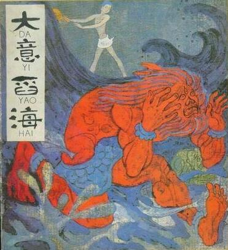

有一个国家，国名叫欢乐无忧。在这个国家里有一个
这一年，旃陀生了一个儿子，这孩子长得端庄英俊，举世无双。孩子一生下来，就会说话。他发誓道：“我要布施天下，救济人民。对于那些贫穷孤苦的人，我要保护救助他们，让他们
大意十七岁时，对父母说：“我要实现我布施穷苦人，让他们过上安乐生活的愿望。”
父母想到他刚出生时立下的誓愿，便对他说：“我们家财产无数，可以随你的意愿去布施，我们不限制你。”
大意说：“父母的财产虽然很多，但如果我广施穷苦人还是不够，并且，我也不能随便用尽父母的财产。我只有到大海里去取回珍宝，才能够用来布施天下的穷苦人。”父母知道去大海寻宝会遇到许多危险，因此，开始不答应大意的请求。可是，大意反复跟父母讲，执意要去。父母无奈，只好答应了他的要求。大意辞别了父母，踏上了去大海中寻宝的路途。
大意在途中经过一个国家。这个国家中有一个
大意回答说：“我辞别了父母从家里出来，是要到大海里去寻宝，然后用来救苦济贫。因此，我现在不能答应你，等我回来以后再说吧。”
大意谢绝了婆罗门的好意，继续往前走，终于来到大海边上。大意采得许多珍宝，可他感到还是不够用，便派人把珍宝带回国去，自己一个人又辗转去更远的地方，找寻更加奇异的珍宝。
他在路上走着，忽然看到远处有一棵大树。这棵树高有八十由延，粗也有八十由延。大意心想：这棵树这么高大，爬上去一定能看得很远。于是，他来到树下，爬了上去。大意站在树上往远处看，远远地望见一座银白色的城堡。城中的宫殿城池都是由白银建成，仙女们在城中翩翩起舞。城外有一条毒蛇，围着城墙盘绕了三圈。那条蛇看见了大意，便抬起头来，一动不动地望着他。大意见那蛇望着自己，心里想：人们被毒蛇咬伤致死，都是因为人没有善意，惊忧了蛇而造成的。想到这，大意坐下，自己静心屏息，进入
大意来到城门口，守城的人进去报告了国王。国王亲自到城门口来迎接大意，高兴地请他进去，要留他在城中住三个月。
大意回答说：“我要前去寻宝，不能在此久留。”
国王执意让他留下来，大意见盛情难却，只得住了下来。大意在这里住得十分舒服。但他总是惦念着寻宝的事，到了第九十天，大意向国王告别，执意要走。国王见再也留不住大意，便取出了各种珠宝要送给他。
大意对国王说：“这些种类的珍宝，我已经采集到了很多，不想再要了。我听说国王您有一颗明月珠，是稀世之宝，请求您送给我。”
国王听大意说想要那颗明月珠。便对他说：“那颗明月珠，不是我舍不得给你，只怕道路上有许多艰难险阻，你很难随身带走。”
大意说：“有福保佑的人，是不怕艰险的。”
国王拿出那颗明月珠，对大意说：“这颗宝珠，可以吸引方圆二十里之内的宝物。仁义之人拿着它，想要什么，就会有什么。如今把它给你，若是你以后得了道，我愿做你的
大意往前走，又遇到一座金城。城中的宫殿城池，都是用黄金筑成，城中的树上皆是珍宝。悠然的乐曲，仿佛自天而降，翩翩起舞的仙女比银城多几倍。城外也有一条蛇，盘绕着城墙转了六圈。那蛇看见大意，就抬起头来望着他。大意坐下，屏息敛气，进入禅定。一会儿，蛇便低头卧下。大意见蛇睡了，便要进城，守城人报告了国王。国王亲自出城来迎接。国王见到大意，也执意请大意住三个月。大意不能推辞，便留了下来。
国王尽心招待大意，让他尽情享乐。就这样过了六十天，大意惦念着寻宝之事，便向国王告辞，打算离开。国王万般挽留，但大意一定要走，国王只好答应让他走。
国王取出各种珍宝要送给大意，大意对国王说：“这些珠宝，我都不喜欢。听说您有一颗明月珠，如果您愿意，请您把它送给我。”
国王说：“这颗宝珠，不是我舍不得给你，只怕路途遥远又多艰险，你很难随身带着。”
大意回答说：“有福保佑之人，怕什么艰难险阻。”
国王说：“这颗宝珠，可以吸引方圆四十里之内的珍宝，仁义之人得到它，神能无比。今天把它送给你，今后你若是得了道，我愿做你的弟子追随你，侍奉你。”大意十分高兴地收下宝珠，继续上路了。
大意继续往前走，又看见一座水晶城。城里宫殿城池都是水晶筑成。城外一条毒蛇，绕城盘旋九圈。蛇看见大意，便抬起头来望着他。大意坐下来。静心敛气，进入禅定，蛇便低下头睡了。国王出来迎接大意，热情邀请大意留下来住三个月，并尽心为大意准备了各种饮食、衣服、歌女舞女，让他尽情享乐。过了四十天，大意向国王告辞。
国王取出各种珍宝，大意推辞不要，对国王说：“这些珍宝对我来说没有什么用处，听说国王有一颗明月珠，求您把它送给我吧。”
国王说：“这颗宝珠，可以吸引六十里地之内的珍宝，我把它给你，今后你若是得了道，我愿做你的弟子，追随、奉养你。到那时，你定会有超人的智慧。”大意收下宝珠，高高兴兴地走了。
大意继续往前走，又看见一座琉璃城。城中的宫殿城堡都是琉璃筑成的。各种镶嵌着珍宝的树，奏着悠然悦耳的乐曲。乐曲声中，许许多多的仙女正在歌舞。城外也有一条毒蛇，绕城盘了十二圈。毒蛇见大意过来，便抬起头来看着他。大意坐下来屏心静气，进入禅定。一会儿，蛇便低头睡去。大意走到城门前，国王亲自出来迎接大意，请他在城里住三个月，大意留了下来。国王为他准备了各种精美的饮食、衣物，还有许多歌女舞女供他娱乐享受。过了二十天，大意向国王辞行。
国王取出各种珍宝送给大意，大意谢绝了，对国王说：“我听说您有一颗明月珠，是稀世之宝，求您把它给我吧。”
国王说：“这颗月明珠，能吸引八十里地之内的宝贝。我把它送给你，今后你得了道，我愿意追随你，做你的弟子，让我也能得到超人的智慧。”大意收下宝珠，欢欢喜喜地走了。
大意有了四颗明月珠，心里想：出来的目的是寻求稀世珍宝，现在愿望已经实现，该回家去了。于是，大意就顺着原路往回走。
这一天，大意来到了大海边。海龙王对海神们说：“我们海中虽然有各种名贵珍稀的宝贝，但是没有大意身上带着的那种明月珠。你们去把大意的明月珠抢来，放在我的龙宫中，我就是最富有的了。”
一个海神变作人的模样来到海边，见到大意后对他说：“听说你得到了几颗奇异的宝珠，能让我看一看吗？”
大意没有任何戒备之心，便摊开手，让海神看那四颗明月珠。海神假意要细看那珠子，抓住大意的手轻轻一抖，明月珠便掉进了大海中。
大意见自己历尽艰辛寻来的宝珠，就这么轻易地丢掉了，不禁火冒万丈，非常愤怒地对海神说：“我一路上历尽千辛万苦，经过多少艰险，才寻到这几颗明月珠，而你却想把它夺去，今天你要是不把珠子还给我，我就舀干这海水！”
海神听了哈哈一笑，说道：“大意，你的口气不小啊！你知道吗，就像太阳不会堕落到地上，大风不能用绳子拴住一样，海水是舀不干的。即使是如此，你也别想把大海的水舀干！”大意听了海神的话，朗声大笑起来。他回答海神道：“想起我几世轮回，生
海神并没有把大意的话放在心上，他冷笑一声就离去了。大意说干就干，拿起一把大勺开始舀海水。他舀啊，舀啊。不知过了多少白天，也不知过了多少黑夜。大意一心一意地舀着海水，想把明月珠早日找回来。终于有一天，大意的精诚感动了天地，到了第一百零四天，四大天王全都下凡来帮助大意舀海水。很快海水便被舀干了一半多。
海龙王和诸海神见大意意志如此坚定，海水已被他舀干了一大半，不免惊慌起来。
海龙王把海神们召集在一起，商量道：“看来这大意真是要干到底了，如果不还给他明月珠，他真得会把海水舀干的。到那时候水尽泥出，我们的宫殿会被破坏。可这明月珠确实是稀世珍宝，如果就这么还给他，实在是不甘心。不如我们拿些别的珍宝给他，把他打发走算了。”
众海神拿了各种珍宝送给大意，并说了许多好话想哄大意走。大意坚决不要。他语气坚决地对海神们说：“我不要你们的宝物，只要我的明月珠，如果你们不还我明月珠，我是不会罢休的！”海神们见大意毫无回转的意思，无奈，只好报告给海龙王，拿出明月珠还给了大意。
大意要回明月珠后，便回转家乡。路上，他娶了那个婆罗门的女儿。回到国内，大意尽情地布施。从此以后，他们的国家，再也没有挨饿受冻的穷苦人了。邻国的穷苦百姓听说了，也都离开家乡，携妻带子来投奔大意。在大意的国家，连天上的飞鸟和地下的爬虫都得到过他的好处。大意寿终以后，升天做了天帝释。